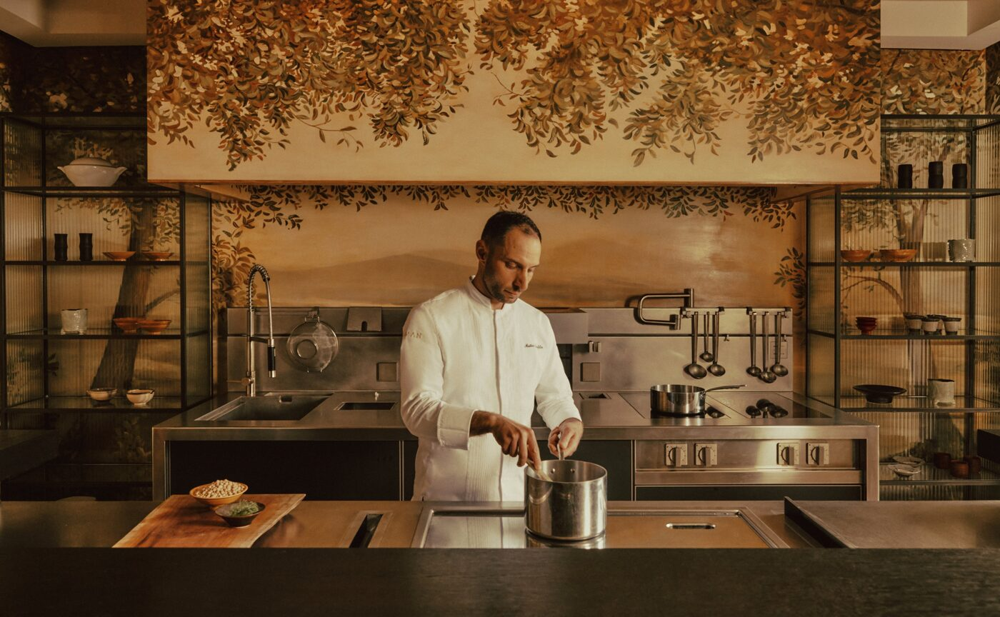

Milan opens its shows on Tuesday. Venice is a little over two hours east by train, and on the ground floor of Palazzo Papadopoli there is now a counter with eight chairs, a chef on the other side of it, and one seating a night.
The room sits at garden level, below the frescoed floors that made Aman Venice famous. Its walls are painted with trees, a canopy of leaves running above steel shelving and a plain dark counter. The kitchen is on your side of the glass. There is no pass, no door swinging open and shut, no waiter arriving with a plate somebody else cooked. Matteo Panfilio, the hotel’s executive chef, works a teppanyaki plate and a charcoal yakiniku grill within reach of every guest.
Eight seats, ten courses, Tuesday to Saturday, 7.30pm. That is the whole arrangement. Aman calls it The Palazzo Kitchen Table and describes it as an Italian reading of omakase, the Japanese custom in which the diner hands the decisions to the cook. Here the decisions belong to the Veneto. The menu on the hotel’s site is marked as a sample, and the kitchen says it moves with whatever the lagoon and the market islands produce that week.
The islands
Sant’Erasmo sits twenty minutes across the water from the palazzo, a flat market garden of an island where the violet artichokes grow in salt-touched soil. Its first buds, the castraure, are the ones cut early so the plant can throw out more. They open the sample menu, raw. Cuttlefish follows with peas and its own roe. A sardine arrives with yuzu kosho, apple and lemon, the first sign that the seasoning has come from further away than the fish.
The mains move between the two grills. Langoustine goes on the plate with another castraure and orange. Aubergine is barbecued with soy. A ravioli sits in seaweed broth, poured at the counter. A beef skewer comes off the charcoal with truffle, and the meat, the kitchen says, is cut from the foothills of the Venetian Alps. Tuna belly is finished with caviar. Coastal herbs from Cavallino, the long spit of land that closes the lagoon to the north, turn up through the evening.

The kitchen is the room. Matteo Panfilio at The Palazzo Kitchen Table, Aman Venice · Courtesy of Aman
Two fires
The teppanyaki plate does the fast work, sealing the outside of a langoustine before the inside has time to notice. The yakiniku grill does the slow work, charcoal under a small grate, and it puts a faint sweetness on skewered beef and on cuttlefish that a gas flame cannot. Between them sit the light Japanese sauces and the Italian habit of leaving a good ingredient alone. Dessert brings the two sides together without apology: a matcha choux, then a kumquat sablé with ricotta ice cream.
Upstairs the ceilings belong to Tiepolo. Downstairs the only thing to look at is the man cooking your dinner.
The Splendid EditWine comes as a pairing drawn from the hotel’s list, and for those who want it, from the Master’s Collection, the palazzo’s cellar of rare bottles. Non-residents can book, subject to the eight chairs. Panfilio also runs market walks and cooking classes from the same room, so the counter is not idle by day.
Why this week
Milan Fashion Week runs from 22 to 28 September. The Frecciarossa from Milano Centrale reaches Venezia Santa Lucia in a little over two hours, and from the station a water taxi puts you at the hotel’s private jetty on the Grand Canal in a quarter of an hour. Aman has run Palazzo Papadopoli since 2013, twenty-four rooms and suites across two noble floors, Jean-Michel Gathy’s interiors under sixteenth-century ceilings. Arva still serves on the piano nobile and in the canal-side garden until the alfresco season closes in October. The Bar keeps its Rotta fresco and its late hours.
The Kitchen Table is the smaller, newer thing, and the harder table to get. One seating, eight people, five nights. Book it before the Milan schedule fills your evenings, and give yourself the night after the last show to sit down and let someone else decide.
Restaurant format, hours, cooking methods, ingredients and sample menu from aman.com and the Aman Venice press announcement of August 2026. Hotel details from aman.com. Milan Fashion Week dates from the Camera Nazionale della Moda Italiana calendar. Train and water-taxi times are approximate.
Photography courtesy of Aman — © Aman, Aman Venice